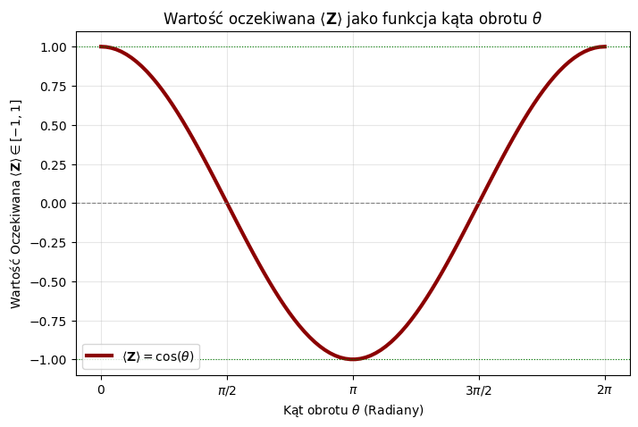

🧐 Wyjaśnienie Działania Funkcji Kosztu w VQA (Mini-Eksperyment)
W tym prostym eksperymencie z Wariacyjnym Algorytmem Kwantowym (VQA), optymalizator (Gradient Descent) minimalizuje funkcję kosztu, choć nie została ona jawnie zdefiniowana jako np. Mean Squared Error (MSE). Dzieje się tak, ponieważ w bibliotekach takich jak PennyLane, optymalizator domyślnie przyjmuje, że to, co zwraca \(\mathbf{QNode}\) jest funkcją celu, którą należy minimalizować.
1. Definicja Kosztu Przez Operator PauliZ
Twój obwód qn(theta) jest zdefiniowany następująco:
Ponieważ \(\mathbf{qn}(\theta)\) zwraca Wartość Oczekiwaną operatora PauliZ (\(\langle \mathbf{Z} \rangle \in [-1, 1]\)), optymalizator traktuje ten wynik jako funkcję kosztu \(\mathbf{C}(\theta)\), którą należy sprowadzić do najniższej możliwej wartości, czyli \(-1\).
\[\text{Optymalizator dąży do minimalizacji: } \mathbf{C}(\theta) = \langle \mathbf{Z} \rangle\]
2. Cel Obwodu Kwantowego
W tym kontekście, obwód VQA jest używany do znalezienia stanu własnego operatora \(\mathbf{Z}\) odpowiadającego najniższej wartości własnej (\(\lambda = -1\)). Jest to analogiczne do algorytmu Variational Quantum Eigensolver (VQE), który służy do znajdowania energii stanu podstawowego (najniższej wartości własnej Hamiltonianu).
Pożądany Stan: Stan \(\ket{1}\), dla którego \(\mathbf{Z}\ket{1} = -1\ket{1}\) (minimalna wartość oczekiwana).
Architektura Obwodu:
qml.X(wires=0): Ustawia kubit w stan \(\ket{1}\).
qml.RY(theta, wires=0): Wprowadza parametr \(\theta\), który perturbuje stan \(\ket{1}\).
Działanie Optymalizatora: Zaczynając z \(\theta\) bliskim zera (gdzie \(\langle \mathbf{Z} \rangle \approx -1\)), optymalizator bardzo szybko dąży do kąta \(\theta\), który minimalizuje perturbację, czyli \(\theta \to 0\) lub \(\theta \to 2\pi\). W tych punktach stan wraca do \(\ket{1}\), a koszt osiąga swoje minimum \(-1\).
💡 Podsumowanie
Eksperyment ten demonstruje podstawową funkcjonalność wariacyjnego uczenia maszynowego w kwantowym kontekście, gdzie sam obwód kwantowy może definiować funkcję celu (Hamiltonian), a klasyczny optymalizator znajduje parametry \(\theta\), które minimalizują tę funkcję. Jest to archetyp podejścia hybrydowego (klasyczny optymalizator + kwantowe przetwarzanie).
import pennylane as qmlimport pennylane.numpy as npimport matplotlib.pyplot as plt# 1. Definicja Urządzenia i Obwodu Kwantowegodev = qml.device('default.qubit', wires=1)@qml.qnode(dev)def qn(theta): qml.X(wires=0) # Ustawia stan na |1> (expval Z = -1) qml.RY(theta, wires=0) # Obrót wokół Y (zmienia expval Z)return qml.expval(qml.PauliZ(0)) # Funkcja celu: minimalizujemy expval Z# 2. Inicjalizacja Parametrów i Optymalizatora# Zaczynamy z theta, gdzie koszt nie jest minimalny, aby zobaczyć proces optymalizacji.# Np. theta = pi/2, gdzie RY(pi/2) na |1> daje 1/sqrt(2)(|1> - |0>), a expval Z = 0.theta_init = np.array([np.pi-0.01], requires_grad=True) opt = qml.GradientDescentOptimizer(stepsize=0.1)epochs =100# Listy do przechowywania historii treningucost_history = []theta_history = []# 3. Pętla Treningowatheta = theta_init # Ustawienie początkowej wartości thetaprint("--- Rozpoczęcie treningu ---")for epoch inrange(epochs):# Wykonaj krok optymalizatora i oblicz koszt theta, cost = opt.step_and_cost(qn, theta)# Zapisz historię cost_history.append(cost) theta_history.append(theta[0]) # theta jest tablicą numpy, bierzemy tylko wartośćif epoch %10==0or epoch == epochs -1:print(f"Epoka: {epoch:3d} | Kąt theta: {theta.item():.4f} | Koszt: {cost.item():.4f}")print("\n--- Trening zakończony ✅ ---")print(f"Końcowy kąt theta: {theta.item():.4f}") print(f"Końcowy koszt: {cost.item():.4f}")# 4. Wizualizacja Historii Treningufig, axes = plt.subplots(1, 2, figsize=(14, 5))# Wykres kosztuaxes[0].plot(range(epochs), cost_history, color='blue', linewidth=2)axes[0].set_title('Ewolucja Funkcji Kosztu')axes[0].set_xlabel('Epoka')# POPRAWIONA LINIA: Poprawna składnia LaTeX dla wartości oczekiwanejaxes[0].set_ylabel('Koszt ($\langle \\mathbf{Z}\\rangle$)') axes[0].grid(True, linestyle='--', alpha=0.6)axes[0].axhline(-1, color='red', linestyle=':', label='Minimum teoretyczne (-1)', alpha=0.7)axes[0].legend()# Wykres kąta thetaaxes[1].plot(range(epochs), theta_history, color='green', linewidth=2)axes[1].set_title('Ewolucja Kąta $\\theta$')axes[1].set_xlabel('Epoka')axes[1].set_ylabel('Kąt $\\theta$ (Radiany)')axes[1].grid(True, linestyle='--', alpha=0.6)axes[1].axhline(0, color='red', linestyle=':', label='Wartość optymalna (0 lub $2\\pi$)', alpha=0.7)axes[1].axhline(2* np.pi, color='red', linestyle=':', alpha=0.7)axes[1].legend()plt.tight_layout() # Teraz powinno działać poprawnieplt.show()
\[\mathbf{R_X}(\theta) \ket{0} = \cos\left(\frac{\theta}{2}\right) \ket{0} - i \sin\left(\frac{\theta}{2}\right) \ket{1} \] Wtedy wartość oczekiwana operatora \(\mathbf{Z}\) jest równa: \[\langle \mathbf{Z} \rangle = \cos(\theta) \] Ponieważ funkcja \(\cos(\theta)\) jest ciągła i przyjmuje wartości w zakresie \([-1, 1]\), jej wykres idealnie demonstruje to, co chcesz osiągnąć.
import pennylane as qml import pennylane.numpy as np import matplotlib.pyplot as plt # 1. Definicja Urządzenia (1 kubit) dev = qml.device('default.qubit', wires=1) # 2. Poprawiony Obwód Kwantowy z Parametryczną Bramką RX @qml.qnode(dev) def continuous_expval(theta): """ Obwód stosuje rotację RX z kątem theta. Zwraca wartość oczekiwaną operatora PauliZ, która jest równa cos(theta). """# Zastosowanie bramki obrotu RX qml.RX(theta, wires=0) return qml.expval(qml.PauliZ(wires=0)) # 3. Generowanie Danych # # Tworzymy wektor kątów theta od 0 do 2*pi (pełny obrót) theta_vals = np.linspace(0, 2* np.pi, 100) # Obliczamy wartość oczekiwaną dla każdego kąta expval_vals = [continuous_expval(theta) for theta in theta_vals] # 4. Wizualizacja Wyników plt.figure(figsize=(8, 5)) plt.plot(theta_vals, expval_vals, label=r'$\langle \mathbf{Z} \rangle = \cos(\theta)$', color='darkred', linewidth=3)plt.axhline(0, color='gray', linestyle='--', linewidth=0.8) # Linia y=0 plt.axhline(1, color='green', linestyle=':', linewidth=0.8) # Linia y=1 plt.axhline(-1, color='green', linestyle=':', linewidth=0.8) # Linia y=-1 # Oznaczenia plt.title(r'Wartość oczekiwana $\langle \mathbf{Z} \rangle$ jako funkcja kąta obrotu $\theta$') plt.xlabel(r'Kąt obrotu $\theta$(Radiany)') plt.ylabel(r'Wartość Oczekiwana $\langle \mathbf{Z} \rangle \in [-1, 1]$') plt.xticks([0, np.pi/2, np.pi, 3*np.pi/2, 2*np.pi], [r'$0$', r'$\pi/2$', r'$\pi$', r'$3\pi/2$', r'$2\pi$']) plt.grid(True, linestyle='-', alpha=0.3) plt.legend() plt.show()

# --- Dodanie Oznaczenia dla Bramki X (theta = pi) ---pi_angle = np.pipi_expval = continuous_expval(pi_angle) # Wartość oczekiwana = -1.0# Pionowa linia w theta = piplt.axvline(pi_angle, color='blue', linestyle='-.', linewidth=1.5, alpha=0.7)# Punkt na wykresieplt.plot(pi_angle, pi_expval, marker='o', color='blue', markersize=8, label=r'Punkt $\mathbf{X} = \mathbf{R_X}(\pi)$')# Oznaczeniaplt.title(r'Wartość oczekiwana $\langle \mathbf{Z} \rangle$ jako funkcja kąta obrotu $\theta$')plt.xlabel(r'Kąt obrotu $\theta$(Radiany)')plt.ylabel(r'Wartość Oczekiwana $\langle \mathbf{Z} \rangle \in [-1, 1]$')plt.xticks([0, np.pi/2, np.pi, 3*np.pi/2, 2*np.pi], [r'$0$', r'$\pi/2$', r'$\pi$', r'$3\pi/2$', r'$2\pi$'])plt.grid(True, linestyle='-', alpha=0.3)plt.legend(loc='lower left')plt.show()